If 109 electrons move out of a body to another body every second, how much time is required to get a total charge of 1 C on the other body?
How much positive and negative charge is there in a cup of water?
Coulomb's law for electrostatic force between two point charges and Newton's law for gravitational force between two stationary point masses, both have inverse-square dependence on the distance between the charges and masses respectively.
Part (a)
Compare the strength of these forces by determining the ratio of their magnitudes (i) for an electron and a proton and (ii) for two protons.
Part (b)
Estimate the accelerations of electron and proton due to the electrical force of their mutual attraction when they are 1 Å( = 10‑10 m) apart? ( mp = 1.67 × 10‑27 kg, me = 9.11 × 10‑31 kg )
A charged metallic sphere A is suspended by a nylon thread. Another charged metallic sphere B held by an insulating handle is brought close to A such that the distance between their centres is 10 cm, as shown in Fig. 1.4(a). The resulting repulsion of A is noted (for example, by shining a beam of light and measuring the deflection of its shadow on a screen). Spheres A and B are touched by uncharged spheres C and D respectively, as shown in Fig. 1.4(b). C and D are then removed and B is brought closer to A to a distance of 5.0 cm between their centres, as shown in Fig. 1.4(c). What is the expected repulsion of A on the basis of Coulomb's law? Spheres A and C and spheres B and D have identical sizes. Ignore the sizes of A and B in comparison to the separation between their centres.
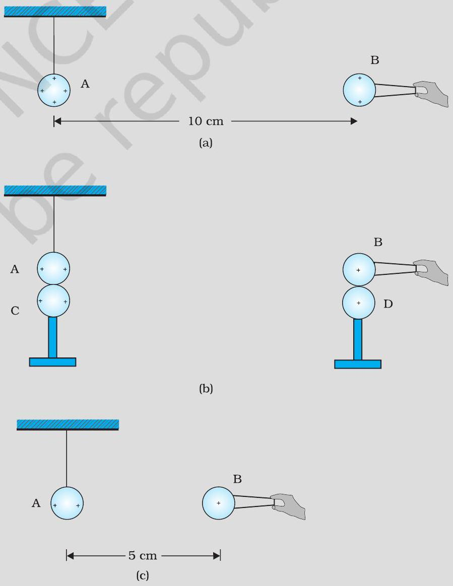
Consider three charges q1, q2, q3 each equal to q at the vertices of an equilateral triangle of side l. What is the force on a charge Q (with the same sign as q ) placed at the centroid of the triangle, as shown in Fig. 1.6?
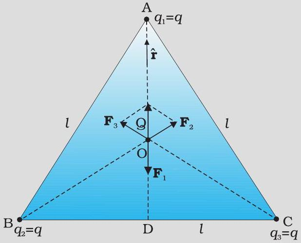
Consider the charges q, q, and -q placed at the vertices of an equilateral triangle, as shown in Fig. 1.7. What is the force on each charge?
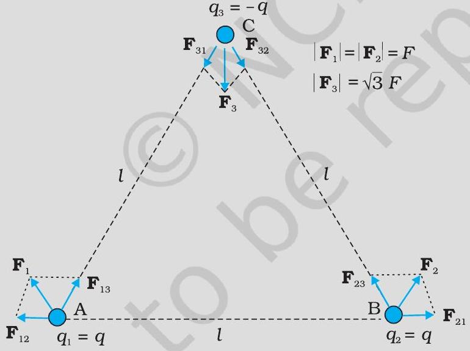
An electron falls through a distance of 1.5 cm in a uniform electric field of magnitude 2.0 × 104 N C‑1 [Fig. 1.10(a)]. The direction of the field is reversed keeping its magnitude unchanged and a proton falls through the same distance [Fig. 1.10(b)]. Compute the time of fall in each case. Contrast the situation with that of 'free fall under gravity'.
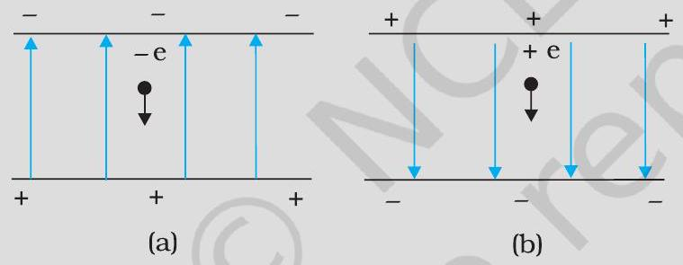
Two point charges q1 and q2, of magnitude +10‑8 C and ‑10‑8 C, respectively, are placed 0.1 m apart. Calculate the electric fields at points A, B and C shown in Fig. 1.11.
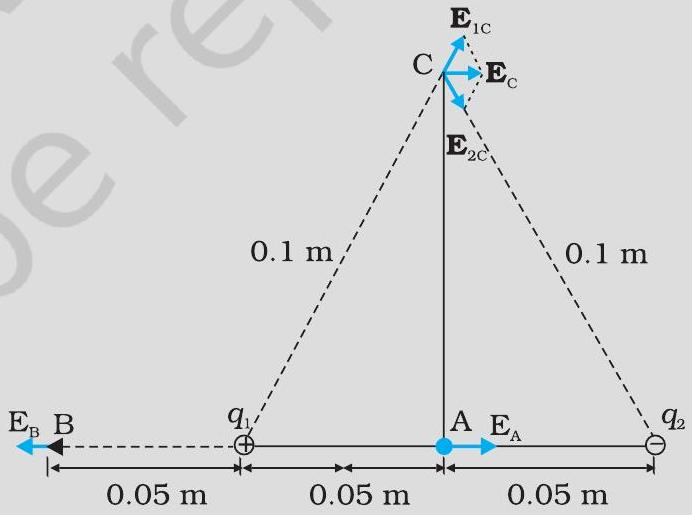
Two charges ± 10 μ C are placed 5.0 mm apart. Determine the electric field at (a) a point P on the axis of the dipole 15 cm away from its centre O on the side of the positive charge, as shown in Fig. 1.18(a), and (b) a point Q, 15 cm away from O on a line passing through O and normal to the axis of the dipole, as shown in Fig. 1.18(b).
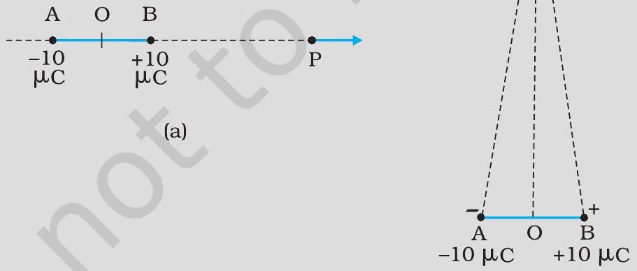
Part (a)
Determine the electric field at a point P on the axis of the dipole 15 cm away from its centre O on the side of the positive charge, as shown in Fig. 1.18(a).
Part (b)
Determine the electric field at a point Q, 15 cm away from O on a line passing through O and normal to the axis of the dipole, as shown in Fig. 1.18(b).
The electric field components in Fig. 1.24 are Ex = α x1 / 2, Ey = Ez = 0, in which α = 800 N / C m1 / 2. Calculate (a) the flux through the cube, and (b) the charge within the cube. Assume that a = 0.1 m.
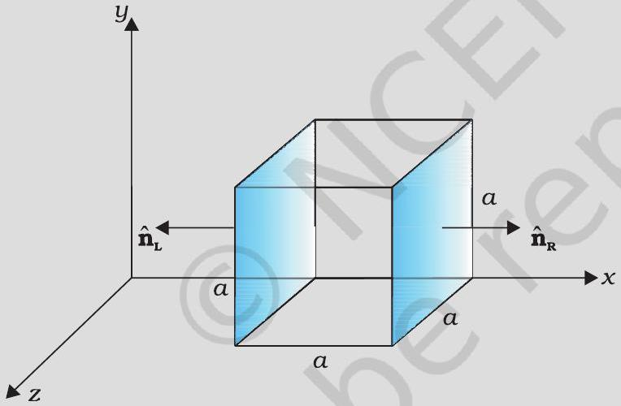
Part (a)
Calculate the flux through the cube.
Part (b)
Calculate the charge within the cube.
An electric field is uniform, and in the positive x direction for positive x, and uniform with the same magnitude but in the negative x direction for negative x. It is given that E = 200 î N / C for x>0 and E = ‑200 î N / C for x<0. A right circular cylinder of length 20 cm and radius 5 cm has its centre at the origin and its axis along the x-axis so that one face is at x = +10 cm and the other is at x = ‑10 cm (Fig. 1.25).
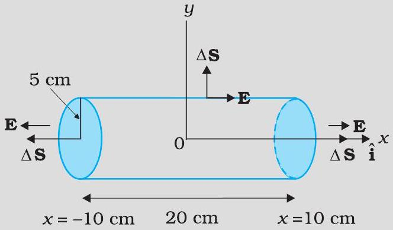
Part (a)
What is the net outward flux through each flat face?
Part (b)
What is the flux through the side of the cylinder?
Part (c)
What is the net outward flux through the cylinder?
Part (d)
What is the net charge inside the cylinder?
An early model for an atom considered it to have a positively charged point nucleus of charge Z e, surrounded by a uniform density of negative charge up to a radius R. The atom as a whole is neutral. For this model, what is the electric field at a distance r from the nucleus?
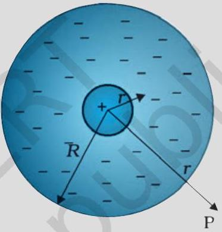
What is the force between two small charged spheres having charges of 2 × 10‑7 C and 3 × 10‑7 C placed 30 cm apart in air?
The electrostatic force on a small sphere of charge 0.4 μ C due to another small sphere of charge ‑0.8 μ C in air is 0.2 N .
Part (a)
What is the distance between the two spheres?
Part (b)
What is the force on the second sphere due to the first?
Check that the ratio k e2G me mp is dimensionless. Look up a Table of Physical Constants and determine the value of this ratio. What does the ratio signify?
Part (a)
Explain the meaning of the statement 'electric charge of a body is quantised'.
Part (b)
Why can one ignore quantisation of electric charge when dealing with macroscopic i.e., large scale charges?
When a glass rod is rubbed with a silk cloth, charges appear on both. A similar phenomenon is observed with many other pairs of bodies. Explain how this observation is consistent with the law of conservation of charge.
Four point charges qA = 2 μ C, qB = ‑5 μ C, qC = 2 μ C, and qD = ‑5 μ C are located at the corners of a square ABCD of side 10 cm. What is the force on a charge of 1 μ C placed at the centre of the square?
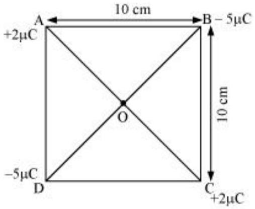
Part (a)
An electrostatic field line is a continuous curve. That is, a field line cannot have sudden breaks. Why not?
Part (b)
Explain why two field lines never cross each other at any point?
Two point charges qA = 3 μ C and qB = ‑3 μ C are located 20 cm apart in vacuum.
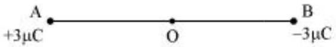
Part (a)
What is the electric field at the midpoint O of the line AB joining the two charges?
Part (b)
If a negative test charge of magnitude 1.5 × 10‑9 C is placed at this point, what is the force experienced by the test charge?
A system has two charges qA = 2.5 × 10‑7 C and qB = ‑2.5 × 10‑7 C located at points A: (0,0,‑15 cm) and B: ( 0,0,+15 cm ), respectively. What are the total charge and electric dipole moment of the system?
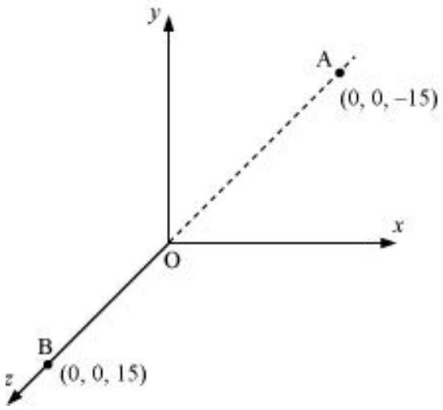
An electric dipole with dipole moment 4 × 10‑9 C m is aligned at 30° with the direction of a uniform electric field of magnitude 5 × 104 NC‑1. Calculate the magnitude of the torque acting on the dipole.
A polythene piece rubbed with wool is found to have a negative charge of 3 × 10‑7 C.
Part (a)
Estimate the number of electrons transferred (from which to which?)
Part (b)
Is there a transfer of mass from wool to polythene?
Part (a)
Two insulated charged copper spheres A and B have their centres separated by a distance of 50 cm. What is the mutual force of electrostatic repulsion if the charge on each is 6.5 × 10‑7 C ? The radii of A and B are negligible compared to the distance of separation.
Part (b)
What is the force of repulsion if each sphere is charged double the above amount, and the distance between them is halved?
Figure 1.30 shows tracks of three charged particles in a uniform electrostatic field. Give the signs of the three charges. Which particle has the highest charge to mass ratio?
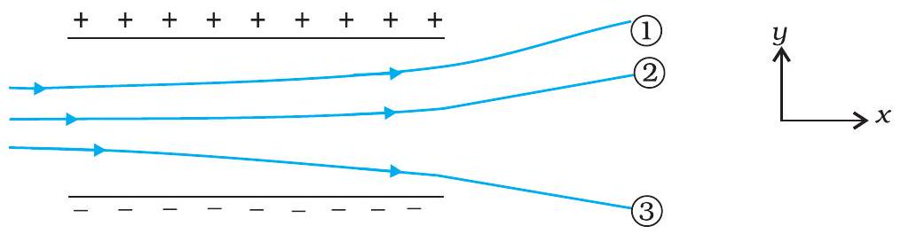
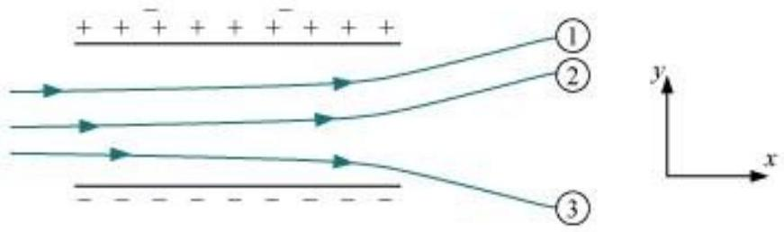
Consider a uniform electric field E = 3 × 103 î N / C.
Part (a)
What is the flux of this field through a square of 10 cm on a side whose plane is parallel to the y z plane?
Part (b)
What is the flux through the same square if the normal to its plane makes a 60° angle with the x-axis?
What is the net flux of the uniform electric field of Exercise 1.14 through a cube of side 20 cm oriented so that its faces are parallel to the coordinate planes?
Careful measurement of the electric field at the surface of a black box indicates that the net outward flux through the surface of the box is 8.0 × 103 Nm2 / C.
Part (a)
What is the net charge inside the box?
Part (b)
If the net outward flux through the surface of the box were zero, could you conclude that there were no charges inside the box? Why or Why not?
A point charge +10 μ C is a distance 5 cm directly above the centre of a square of side 10 cm, as shown in Fig. 1.31. What is the magnitude of the electric flux through the square? (Hint: Think of the square as one face of a cube with edge 10 cm.)
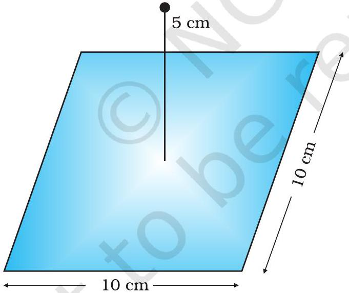
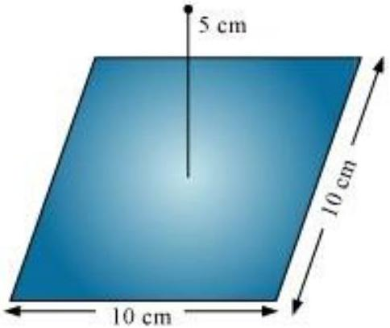
A point charge of 2.0 μ C is at the centre of a cubic Gaussian surface 9.0 cm on edge. What is the net electric flux through the surface?
A point charge causes an electric flux of ‑1.0 × 103 Nm2 / C to pass through a spherical Gaussian surface of 10.0 cm radius centred on the charge.
Part (a)
If the radius of the Gaussian surface were doubled, how much flux would pass through the surface?
Part (b)
What is the value of the point charge?
A conducting sphere of radius 10 cm has an unknown charge. If the electric field 20 cm from the centre of the sphere is 1.5 × 103 N / C and points radially inward, what is the net charge on the sphere?
A uniformly charged conducting sphere of 2.4 m diameter has a surface charge density of 80.0 μ C / m2.
Part (a)
Find the charge on the sphere.
Part (b)
What is the total electric flux leaving the surface of the sphere?
An infinite line charge produces a field of 9 × 104 N / C at a distance of 2 cm. Calculate the linear charge density.
Two large, thin metal plates are parallel and close to each other. On their inner faces, the plates have surface charge densities of opposite signs and of magnitude 17.0 × 10‑22 C / m2. What is E : (a) in the outer region of the first plate, (b) in the outer region of the second plate, and (c) between the plates?
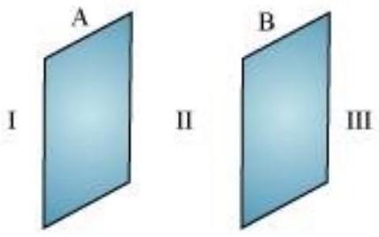